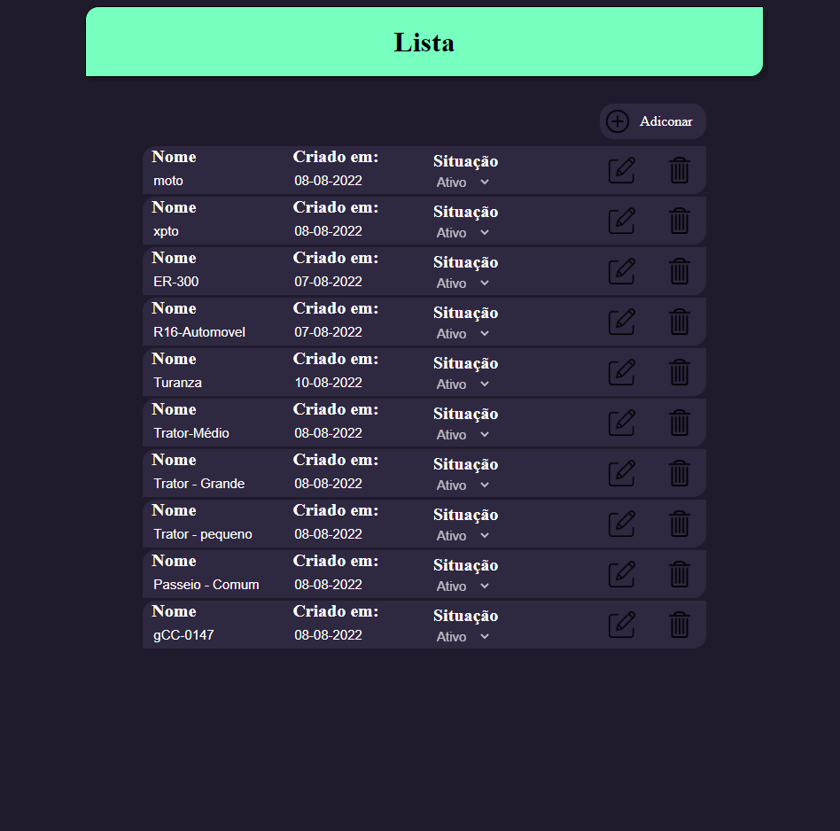
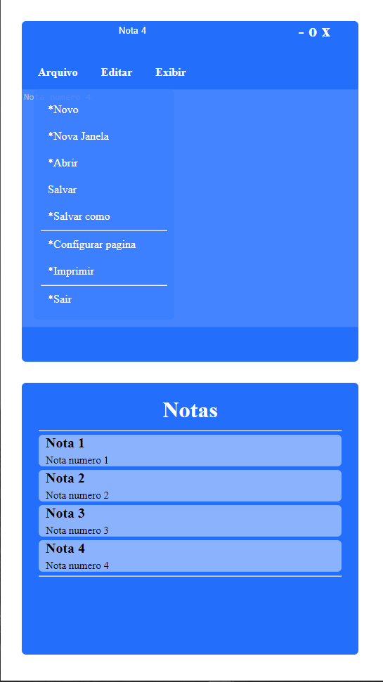
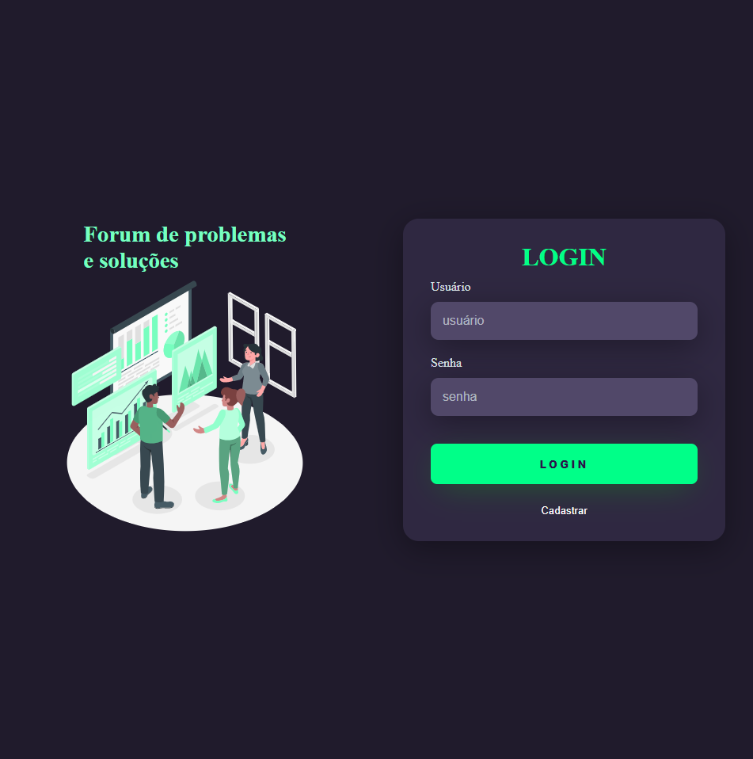

Linguagem
Nome de Projeto
Filtro em implementação

Lista de Cadastro
Projeto de cadastro de pneus.
A pagina é totalmente responsiva

Bloco de Notas
Projeto simples inspirado no bloco de notas do windows 11.

Tela de Login
Projeto de uma tela de autenticação e cadastro de usuário totalmente responsiva.